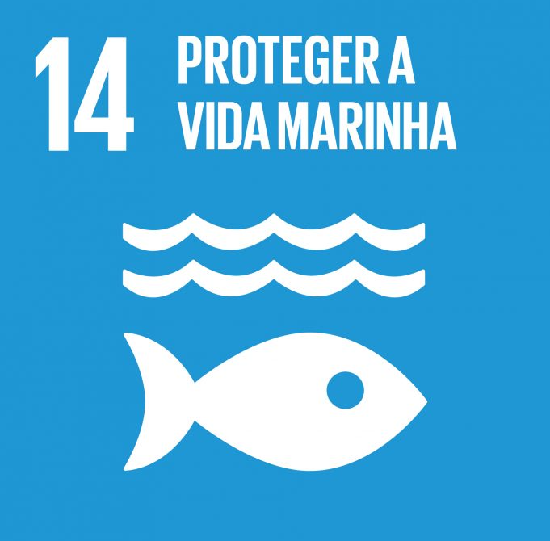

1. Objetivo do desenvolvimento sustentável
O Objetivo do Desenvolvimento Sustentável (ODS) escolhido para esta pesquisa é o ODS 14: Conservação e uso sustentável dos oceanos, dos mares e dos recursos marinhos para o desenvolvimento sustentável. Este objetivo visa tomar medidas urgentes prevenir e reduzir significativamente a poluição marinha de todos os tipos. A meta de interesse dentro deste ODS é a Meta 14.2, busca gerir de forma sustentável e proteger os ecossistemas marinhos e costeiros para evitar impactos adversos significativos, inclusive por meio do reforço da sua capacidade de resiliência, e tomar medidas para a sua restauração, a fim de assegurar oceanos saudáveis e produtivos.

2. Problema de pesquisa
Como Podemos conscientizar a populalção sobre a vida marinha?
3. Objetivo principal
Criar um site educacional que permita aos usuários explorar e aprender sobre ecossistemas marinhos e questões ambientais de uma forma divertida
4. Hipóteses
O site educacional interativo fornecerá uma experiencia de explorar ecossistemas marinhos e questões ambientais e elementos, sendo assim usuários terão uma compreensão mais profunda e engajada do por que a conservação marinha e as práticas.